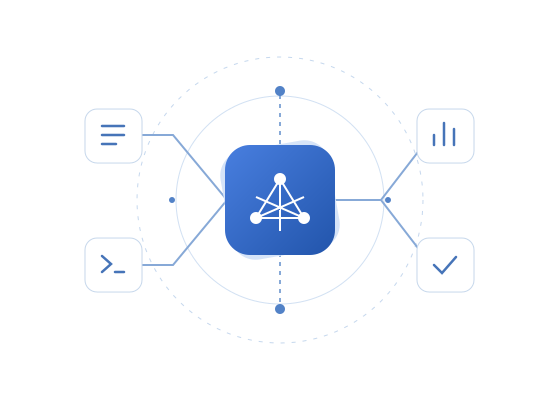

Close to the hardware
Embedded C, BLE-enabled systems, sensor integration, and hands-on firmware debugging.
Software Engineer
Embedded Systems · Android Development · Machine Learning
Building software from the device up.
Firmware, mobile interfaces, and intelligent applications — connected by a practical approach to problem-solving.
01 / About me
I’m Basil, a software engineer with hands-on experience across embedded firmware, Android development, and machine learning.
My work spans developing firmware for BLE-enabled systems, building Android interfaces with Kotlin and Jetpack Compose, and creating applications that simplify machine learning workflows. I enjoy bringing these disciplines together to solve practical problems.
Embedded C, BLE-enabled systems, sensor integration, and hands-on firmware debugging.
Android interfaces with Kotlin, Jetpack Compose, and Kotlin Multiplatform, supported by UI testing.
Machine learning applications that connect data preprocessing, model selection, and evaluation.
02 / Experience
Hands-on work. Across the stack.
Wisilica India Pvt. Ltd.
Wisilica India Pvt. Ltd.
Spectrum Soft Tech Solutions
03 / Selected work
A closer look at what I’ve built.

Making machine learning workflows more accessible.
A web-based tool that simplifies machine learning workflows through automated data preprocessing, feature engineering, model selection, and evaluation.
Bringing specialist guidance and booking together.
A Flask-based web application integrating specialist prediction, a hospital chatbot, and real-time appointment booking in one place.
04 / Technical skills
From low-level logic to intelligent systems.
05 / Education
Ilahia College of Engineering and Technology
St. John’s Higher Secondary School
06 / Get in touch
Have an opportunity in mind? I’d love to hear about it.
basilcibi347@gmail.com